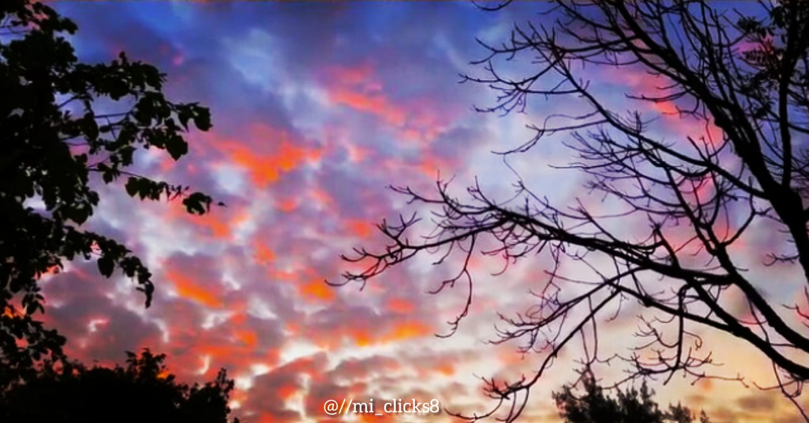
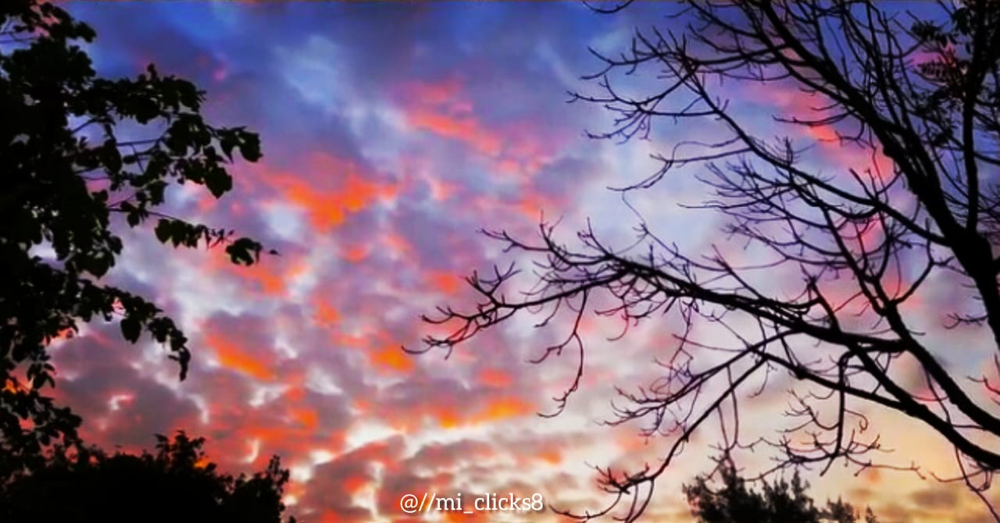
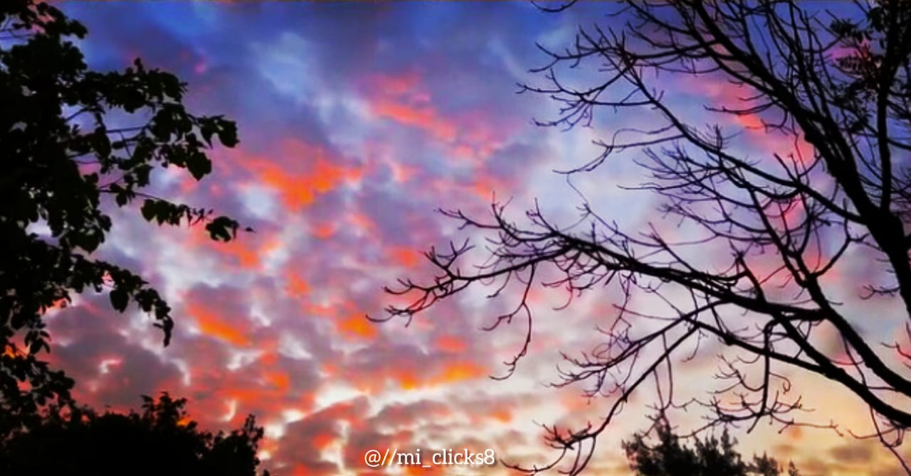

My Photography Gallery


 


Capturing Moments • Telling Stories • Through My Lens
I am a passionate photographer who loves capturing emotions, nature, portraits, and real-life stories. Through this blog, I share my photography work along with behind-the-scenes stories and experiences.

Nature is full of magic. Every mountain, leaf, and river carries a unique story waiting to be captured.
Portrait photography is more than just clicking a picture—it's about capturing expressions and soul.
The streets are alive with stories. A single moment can become an unforgettable photograph.
Email: manihaayoub9@gmail.com
Instagram: @mi_clicks8